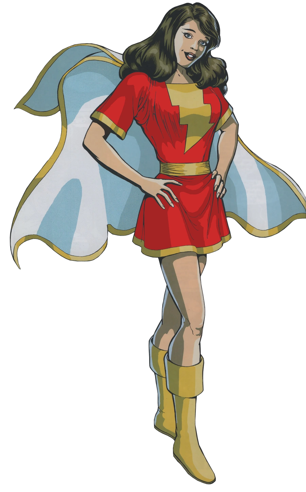

Informações da Mary Marvel
Voltar
Equipes DC

Origem da Mary Marvel
Mary Marvel, também conhecida como Mary Batson, é uma personagem dos quadrinhos
da DC Comics. Ela foi criada por Otto Binder e Marc Swayze, fazendo
sua primeira aparição em Captain Marvel Adventures #18, lançado em 1942.
A Personagem Mary Marvel
Mary Marvel é a irmã adotiva de Billy Batson, o super-herói conhecido como Capitão Marvel. Assim como
seu irmão, Mary possui o poder de se transformar em uma versão adulta superpoderosa de si mesma.
Ao proferir a palavra mágica "Shazam!", ela adquire os poderes dos seis deuses mitológicos:
Sabedoria de Salomão, Força de Hércules, Resistência de Atlas, Poder de Zeus,
Coragem de Aquiles e Velocidade de Mercúrio.
Mary Marvel é retratada como uma personagem corajosa, leal e determinada. Ela luta ao lado de seu irmão
e dos outros membros da Família Marvel para proteger o mundo contra ameaças diversas,
enfrentando
desafios e demonstrando seu valor como heroína.
Quadrinhos Importantes da Mary Marvel
Mary Marvel teve várias histórias importantes nos quadrinhos, destacando seu papel como membro da Família
Marvel e explorando seu crescimento como heroína. Aqui estão alguns quadrinhos relevantes do personagem:
"The Power of Shazam!" (1995):
Escrito por Jerry Ordway e ilustrado por Peter Krause, esta história redefine a origem de Mary Marvel e
aprofunda sua conexão com os poderes místicos de Shazam. A narrativa explora a jornada de Mary em descobrir
e dominar seus poderes, bem como seu papel como defensora da justiça ao lado de sua família adotiva.
"52" (2006-2007):
Mary Marvel desempenha um papel importante nesta série semanal, escrita por Geoff Johns, Grant Morrison,
Greg Rucka e Mark Waid. A história aborda os eventos após os eventos de "Infinite Crisis" e mostra Mary
lidando com uma série de desafios pessoais e mudanças significativas em sua vida e poderes. Ela passa por
uma jornada de autodescoberta e redenção enquanto enfrenta ameaças poderosas.
"Shazam!" (2018-presente):
Escrito por Geoff Johns e ilustrado por Dale Eaglesham, a série "Shazam!" apresenta uma nova abordagem aos
personagens da Família Marvel, incluindo Mary Marvel. A história explora a dinâmica entre os irmãos adotivos
e suas aventuras enquanto enfrentam inimigos místicos e desvendam segredos do passado.
Adaptações em Outras Mídias
Mary Marvel também apareceu em várias adaptações animadas e live-action, trazendo sua história para além dos
quadrinhos. Aqui estão algumas das mais notáveis:
Filme "Shazam!" (2019):
Mary Marvel é interpretada por Grace Fulton neste filme de ação ao vivo, que conta a história de Billy
Batson e sua transformação em Shazam.
Habilidades da Mary Marvel
Mary Marvel possui uma variedade de poderes sobre-humanos quando se transforma em sua forma adulta. Aqui
estão algumas de suas principais habilidades:
Força sobre-humana:
Mary Marvel possui força equivalente à de Hércules, permitindo que ela realize feitos de incrível poder
físico. Ela pode levantar objetos pesados, desferir golpes poderosos e enfrentar oponentes formidáveis.
Voo:
Ela tem a capacidade de voar em alta velocidade, permitindo-lhe deslocar-se rapidamente pelo ar e alcançar
lugares distantes com agilidade.
Invulnerabilidade:
Mary Marvel é resistente a danos físicos e tem uma grande capacidade de recuperação. Ela pode resistir a
ataques poderosos, protegendo-se de ferimentos graves.
Manipulação de Energia:
Além de seus poderes físicos, Mary Marvel também tem a capacidade de manipular e controlar energia mística.
Ela pode disparar rajadas de energia, criar escudos protetores e canalizar sua energia para realizar feitos
extraordinários.
Sabedoria e Coragem:
Assim como seus companheiros da Família Marvel, Mary possui a sabedoria de Salomão e a coragem de Aquiles, o
que a torna uma líder e estrategista habilidosa. Ela usa sua inteligência e determinação para enfrentar
desafios e tomar decisões sábias em situações de perigo.
Essas são apenas algumas das habilidades e características da Mary Marvel, destacando seu status como uma
super-heroína poderosa e valente no universo da DC Comics.
Conclusão
Mary Marvel é uma personagem empolgante e poderosa da DC Comics, conhecida por sua transformação em uma
super-heroína superpoderosa. Sua história nos quadrinhos e em outras mídias destaca sua jornada como membro
da Família Marvel e sua dedicação em proteger o mundo contra o mal. Com seus poderes provenientes dos deuses
mitológicos e seu espírito corajoso, Mary Marvel se destaca como uma figura inspiradora no universo da DC
Comics.